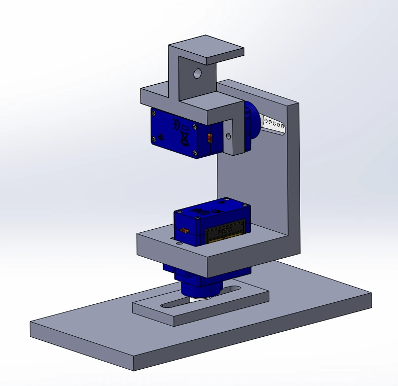
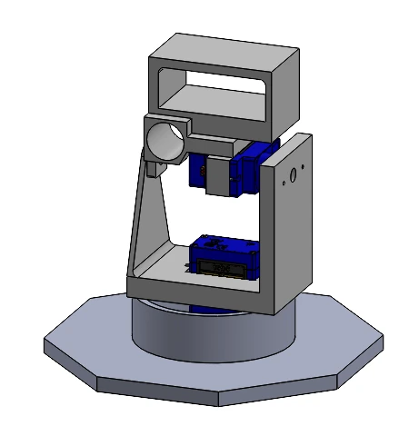
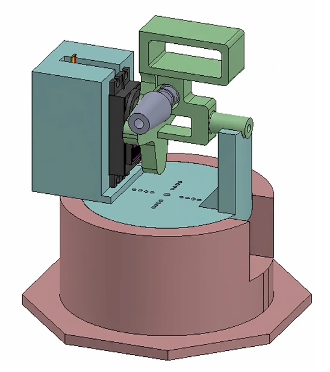

- 1.21 m
- effective range demonstrated at the design fair
- 100% to 20%
- hit rate from 12 in to 39 in, measured before a pump voltage drop was diagnosed
- 2.35
- torque factor of safety on the MG996R pan-tilt servos
A hands-free water delivery system for helmeted athletes: a camera tracks the user’s face, and when the mouth opens, a pan-tilt turret aims a pulsed water stream at it.
As project lead, I coordinated the team and developed the vision and control systems. I implemented face tracking using Python and MediaPipe, integrated with an Arduino-based pan-tilt controller. Adding derivative control and a deadzone to the initial proportional controller reduced hunting and jitter near the target. To account for projectile drop, I calibrated a facial landmark-based distance estimator using physical measurements and implemented distance-dependent aiming corrections. I also resolved a tracking limitation by keeping the face centered in the camera view and applying the upward aiming correction only when firing.


I extensively revised the turret CAD, building on a teammate’s initial designs. After the original SG90 servos proved inadequate, we used moment-of-inertia calculations to select MG996R replacements and redesigned the assembly to accommodate them. My modifications reinforced fragile 3D-printed parts, improved rigidity with a rotating base support ring, and addressed nozzle alignment, component packaging, assembly access, and printability.
Pan-Tilt Mechanism Iterations
Selected stages of development, shown in chronological order.






Three representative stages; additional design iterations are not shown.
We selected the pump based on the required nozzle exit velocity and used a flyback diode to prevent relay lockups from inductive spikes. The final prototype ran on a laptop due to the Raspberry Pi’s limited vision-processing performance. Initial testing achieved hit rates of 100% at 12 in and 20% at 39 in. At the project fair, the system demonstrated an effective range of 1.21 m with an estimated 80–100% hit rate, substantially outperforming initial tests after we recalibrated several parameters in the targeting code. The prototype was completed for $133 against a $200 budget. An industry design judge suggested a hydraulic accumulator, and we identified a more repeatable nozzle mount, as potential future improvements.